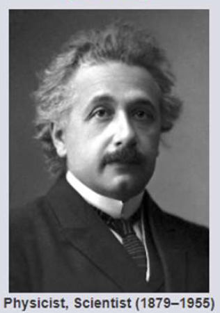

Albert Einstein
(E=mc2)

Physicist, Scientist (1879–1955)
10 Things You Didn’t Know About Albert Einstein:
- He never failed math.
- Einstein encouraged the development of the nuclear bomb.
- He was a great musician.
- He could have been the President of Israel.
- He married his cousin.
- He won the 1921 Nobel Prize for Physics.
- He loved to sail.
- He didn’t like socks.
- He had an illegitimate daughter.
- His brain was stolen after his death.
"The important thing is not to stop questioning. Curiosity has its own reason for existing."
— Albert Einstein
If you have time, you should read more about this incredible human being on his
Wikipedia entry.